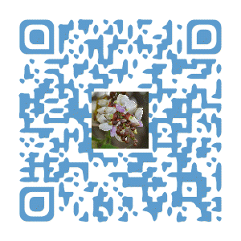
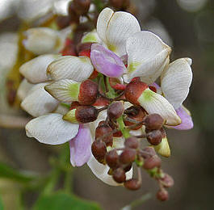
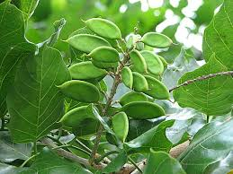
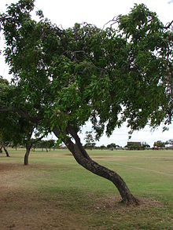

埔墘國小生態園導覽系統
埔墘國小生態園導覽系統
埔墘國小生態園導覽系統
水黃皮---誰放屁!
科別:蝶形花科

一串串淡紫色的花高掛樹梢，是水黃皮，在「數大便是美」的盛花期，站在枝繁葉茂的水黃皮樹下，感覺整個人都籠 罩在花香中，微風吹過，落英繽紛，浪漫的氛圍真讓人忍不住想多佇足片刻呢！
從水黃皮的各種別名可以更加瞭解它：首先，因為水黃皮的葉形像芸香科的「黃皮」，又多生長在水邊，所以叫水黃皮。而水黃皮的豆莢可漂浮水上，隨水流傳播遷移，因此又叫「水流豆」。至於「臭腥仔」這個名字，則是因為它的葉子揉搓後會有臭腥味，聽起來令人想掩鼻。不過，因為它的根系發達，能抵抗強風，所以又叫「九重吹」。這個美譽又讓它成為防風林、行道樹，以及公園、校園常栽植的樹種，是綠美化的優良樹種。它的種子可供榨油，提煉的油脂可治皮膚病。水黃皮的木材質地緻密，從前農家都用它來製作牛車車輪和農具，堅固耐用。
我的優點真的是太多了，可是有的小朋友幫我取了一個綽號叫「誰放屁」，不是很好聽，希望下次遇到我時，要記得是「水黃皮」喔！
 充電區
充電區
●學名:Millettia oraria
●科名:蝶形花科
●型態:半落葉性喬木
●葉:奇數羽狀複葉、波狀緣、葉片平滑光亮
●花:春、秋開花，淡紫、淡紅、白色碟形花，屬總狀花序，花期約一個月。
●果實:莢果木質刀狀，長橢圓形，扁平而厚、質輕、內藏扁球形種子1至2顆。
●原產地:台灣
圖片
  
參考資料:
中央研究院數位典藏資源館(http://digiarch.sinica.edu.tw/content/subject/resource_content.jsp?oid=16777535&queryString=%E6%B0%B4%E9%BB%83%E7%9A%AE#)
書籍:
風和日麗(埔墘國小校園植物圖鑑Ⅰ):綠拇指校園植物工作房
意見回饋
http://goo.gl/forms/TYAn8vnVM5
建議使用Google Chrome瀏覽